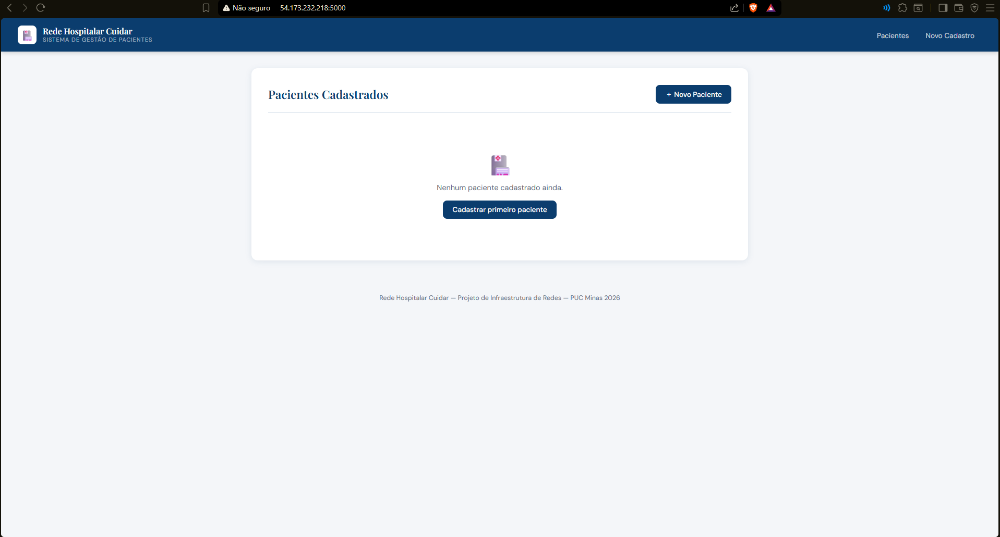
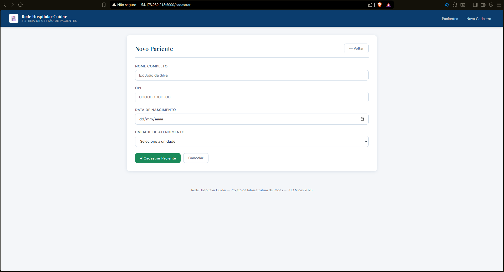
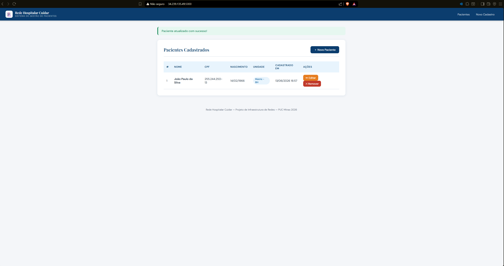
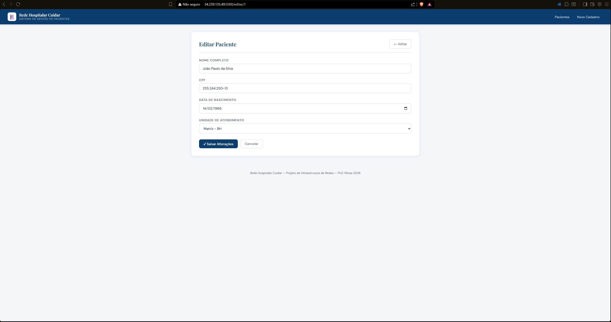

Grupo de Trabalho
Planejamento e Prototipação
Gestão e Organização do Projeto
Definição do Tema e Cenário
O projeto foca na Rede Hospitalar Cuidar, uma instituição de saúde com matriz em Belo Horizonte e unidades remotas (Secretaria e três UPAs). O cenário exige alta disponibilidade e segmentação, dado o tráfego de dados sensíveis e a necessidade de comunicação ininterrupta para prontuários eletrônicos.
Responsabilidades e Colaboração
Para atender à gestão da comunicação e colaboração, o grupo utilizou ferramentas como Microsoft Teams e WhatsApp para alinhamento síncrono e assíncrono.
| Integrantes | Responsabilidade |
|---|---|
| Igor e Pedro | Planejamento de sub-redes (CIDR), NAT e lógica de serviços |
| Henrique | Implementação técnica e nomenclatura no Cisco Packet Tracer |
| Bernardo e Athos | Gestão de ativos, custos e planilhas de inventário |
| Fabrício | Redação técnica e revisão das normas de documentação |
Cronograma de Dedicação
| Data | Tarefa |
|---|---|
| 09/02 a 28/02 | Estudo dos microfundamentos e definição do cenário |
| 01/03 a 15/03 | Elaboração do inventário detalhado e cálculos de tráfego |
| 16/03 a 24/03 | Desenvolvimento do protótipo e testes de conectividade (Ping) |
| 25/03 a 28/03 | Ajustes de nomenclatura conforme feedback e entrega final |
Arquitetura Lógica e Endereçamento
Divisão por CIDR e NAT
A rede utiliza o bloco privado 10.0.0.0/8, segmentado para otimizar o domínio de broadcast e aumentar a segurança.
| Unidade | Faixa de Rede | Gateway | Servidor Principal |
|---|---|---|---|
| Matriz | 10.10.0.0/24 | 10.10.0.1 | SRV-BH-PRONTUARIO (10.10.0.10) |
| Secretaria | 10.20.0.0/24 | 10.20.0.1 | SRV-SEC-ADMIN (10.20.0.10) |
| UPA 1 | 10.30.0.0/24 | 10.30.0.1 | SRV-UPA1-LOCAL (10.30.0.10) |
| UPA 2 | 10.40.0.0/24 | 10.40.0.1 | SRV-UPA2-LOCAL (10.40.0.10) |
| UPA 3 | 10.50.0.0/24 | 10.50.0.1 | SRV-UPA3-LOCAL (10.50.0.10) |
Justificativa de Recursos
Inventário de Equipamentos
O inventário foi organizado para equilibrar custo-benefício e robustez. Na Matriz, optamos por Switches Cisco Catalyst 9200L pela capacidade de empilhamento e Firewalls FortiGate para segurança NGFW. O uso de nobreaks senoidais da APC garante que os sistemas de prontuário não sofram quedas por oscilações elétricas.
Cálculo de Links e Tráfego
Conforme a planilha de cálculos, a Matriz possui um link de 152 Mbps, dimensionado para suportar o tráfego de videoconsultas e sincronização de banco de dados das filiais, que operam com links de 42,4 Mbps cada.
Plano de Testes e Validação
Para validar o funcionamento, foram estabelecidos os seguintes testes no protótipo:
- Teste de Conectividade Interna: Pings entre PCs da mesma sub-rede.
- Teste de Conectividade WAN: Pings entre a UPA 3 e o SRV-BH-PRONTUARIO.
- Validação de Nomenclatura: Conferência de que todos os dispositivos seguem o padrão Unidade-Setor-ID.
Conclusão da Etapa 1
A Etapa 1 conclui-se com um protótipo funcional e uma documentação que justifica cada ativo escolhido. O projeto está pronto para a próxima fase, garantindo que a infraestrutura física e lógica atenda às demandas críticas da Rede Hospitalar Cuidar.
Preparação do Ambiente em Nuvem e Virtualização Local
Introdução
A Etapa 2 é marcada pelo mapeamento e implantação dos servidores em nuvem e on-premise para o devido atendimento do planejamento inicial. Nesta etapa, adaptações e definições de escopo foram realizadas para garantir a conformidade com o planejamento estabelecido na Etapa 1, bem como para atender às eventuais necessidades identificadas na fase anterior.
Gestão e Organização da Etapa
Responsabilidades e Colaboração
Para a execução da Etapa 2, as responsabilidades foram distribuídas entre os membros do grupo de forma a aproveitar as competências individuais e garantir a entrega dentro do prazo estabelecido.
| Integrantes | Responsabilidade |
|---|---|
| Igor e Pedro | Configuração das instâncias EC2 na AWS e definição da arquitetura da VPC rede-cuidar-vpc |
| Henrique | Configuração do servidor Ubuntu no Oracle VirtualBox, incluindo definição de IP estático via netplan e integração com a rede local |
| Bernardo e Athos | Instalação e validação dos serviços no servidor Ubuntu (Apache2, MySQL, BIND9, DHCP e VSFTPD), além do acompanhamento de custos da instância AWS |
| Fabrício | Configuração do Active Directory, criação das Unidades Organizacionais, vinculação de GPO e redação técnica do documento |
Ambiente em Nuvem — Amazon Web Services (AWS)
Escolha da Plataforma
O grupo optou pela utilização do Amazon EC2 (Elastic Compute Cloud) como plataforma de nuvem, por ser um dos principais players de mercado, oferecendo alta disponibilidade, escalabilidade e um vasto ecossistema de serviços gerenciados adequados à infraestrutura hospitalar da Rede Cuidar.
Instâncias Configuradas
As instâncias foram criadas conforme o mapeamento de servidores definido na Etapa 1. O Windows Server foi implantado via instância EC2 para atuar como servidor de aplicação para publicação do back-end hospitalar.
| Campo | Informação |
|---|---|
| Nome da Instância | Rede Cuidar |
| ID da Instância | i-03c0d9df7ad6e2f96 |
| Tipo de Instância | t2.large |
| Sistema Operacional | Windows Server 2016 Datacenter |
| IP Público | 54.80.166.57 |
| IP Privado | 10.0.1.84 |
| Usuário de Acesso | Administrator |
| Método de Acesso | RDP (Área de Trabalho Remota) |
| Região | us-east-1 (Norte da Virgínia) |
| VPC | rede-cuidar-vpc (10.0.0.0/16) |
| Status | Executando |
Configuração de Segurança — Acesso Criptografado
O acesso às instâncias é realizado por meio de SSH com autenticação por par de chaves pública/privada, garantindo comunicação totalmente criptografada entre os administradores e os servidores em nuvem. Essa abordagem assegura que nenhum acesso não autorizado seja possível sem a chave privada correspondente.
Virtualização Local — Oracle VirtualBox
Configuração do Servidor On-Premise
Para o mapeamento dos serviços on-premise, foi utilizado o Oracle VirtualBox como plataforma de virtualização. O servidor local foi configurado com o sistema operacional Ubuntu Server, representando o servidor SRV-BH-PRONTUARIO da Matriz.
Configuração de Rede — IP Estático
O servidor virtual foi configurado com endereço IP estático via netplan, aplicado no arquivo /etc/netplan/50-cloud-init.yaml:
- Interface:
enp0s3 - Endereço IP:
192.168.18.75/24 - Gateway:
192.168.18.1 - DNS primário:
8.8.8.8(Google DNS) - DNS secundário:
8.8.4.4(Google DNS) - DHCP4: Desabilitado
network:
version: 2
ethernets:
enp0s3:
dhcp4: false
addresses:
- 192.168.18.75/24
routes:
- to: default
via: 192.168.18.1
nameservers:
addresses:
- 8.8.8.8
- 8.8.4.4Serviços Instalados
| Serviço | Função | Porta |
|---|---|---|
| SSH | Acesso remoto seguro e criptografado ao servidor | 22 |
| Apache2 | Servidor Web para publicação de aplicações | 80/443 |
| MySQL | Banco de dados relacional para prontuários eletrônicos | 3306 |
| BIND9/named | Servidor DNS para resolução de nomes da rede interna | 53 |
| DHCP | Distribuição automática de endereços IP na rede local | 67 |
| VSFTPD | Servidor FTP para transferência segura de arquivos | 21 |
Evidências de Funcionamento


rede-cuidar-vpc configurada na AWS com CIDR 10.0.0.0/16
minasgerais.net
minas com sub-OUs belohorizonte, betim e contagem
pgbh vinculada à OU usuarios em belohorizonteVídeo Demonstrativo
O vídeo demonstrativo da Etapa 2, exibindo o funcionamento dos ambientes configurados, está disponível no Microsoft Teams:
▶ Assistir vídeo demonstrativoMonitoramento Ativo da Infraestrutura de Servidores
Introdução ao Monitoramento Centralizado
Para garantir os critérios de alta disponibilidade, integridade, identificação proativa de gargalos e comunicação ininterrupta exigidos pela Rede Hospitalar Cuidar, foi consolidada uma solução de monitoramento de ativos utilizando a ferramenta corporativa Zabbix.
Nesta etapa, a infraestrutura foi integrada de ponta a ponta, permitindo a coleta de dados de desempenho em tempo real por meio de agentes dedicados e protocolos de rede. A telemetria abrange o consumo de hardware (processamento, memória, E/S de disco) e volumetria de tráfego de dados, fornecendo visibilidade total sobre o ecossistema local e em nuvem.
Gestão e Organização da Etapa
Responsabilidades e Colaboração
As atividades da Etapa 3 foram distribuídas entre os membros do grupo conforme as competências demonstradas nas etapas anteriores, garantindo continuidade e coesão na execução do projeto.
| Integrantes | Responsabilidade |
|---|---|
| Igor e Pedro | Instalação e configuração do Zabbix Appliance como plataforma central de monitoramento, incluindo definição de IP estático e acesso à interface web |
| Henrique | Configuração do protocolo SNMP nos servidores Ubuntu e Windows, correção das permissões de acesso no snmpd.conf e cadastro dos hosts no Zabbix |
| Bernardo e Athos | Criação do mapa de rede Rede Hospitalar Cuidar e configuração do dashboard personalizado com widgets de métricas e alertas |
| Fabrício | Análise e interpretação dos dados coletados pelo Zabbix, documentação dos resultados e redação técnica do capítulo |
Topologia Lógica e Visões de Gerência
Mapa de Conectividade da Infraestrutura
O mapa de topologia estruturado no painel nativo do Zabbix (All maps / Rede Hospitalar Cuidar) ilustra as relações de conectividade e o fluxo saudável de comunicação entre os nós de gerência.

Painel Global de Operações (Dashboard)
O monitoramento centralizado conta com um painel de controle principal (Dashboard), que agrega os principais indicadores de desempenho do ecossistema hospitalar, facilitando a tomada de decisão em nível de suporte de infraestrutura.

Inventário de Hosts e Status de Disponibilidade
Todos os hosts monitorados foram devidamente parametrizados e encontram-se operando sem a presença de problemas ou alertas ativos. A integração com o agente Zabbix garante a confiabilidade dos status apresentados.

Métricas de Performance — Servidor Local (srv-bh-prontuario)
O servidor local virtualizado, responsável pelo banco de dados de prontuários eletrônicos e serviços internos da Matriz em Belo Horizonte, teve seu comportamento monitorado pelos gráficos abaixo.


enp0s3)Métricas de Performance — Servidor em Nuvem (srv-aws-cuidar)
A instância EC2 alocada na região Norte da Virgínia (us-east-1), que atua como controlador de domínio Active Directory e hospedagem do back-end hospitalar, teve suas métricas consolidadas abaixo.


Segurança da Informação e Aplicação Back-End
Introdução
A Etapa 4 do projeto da Rede Hospitalar Cuidar teve como objetivo fortalecer os aspectos relacionados à segurança da informação da infraestrutura desenvolvida nas etapas anteriores. Além da elaboração da Política de Segurança da Informação (PSI), foi desenvolvida uma aplicação web para gerenciamento de pacientes, bem como uma cartilha de conscientização voltada aos colaboradores da organização.
Adicionalmente, foram realizadas análises de vulnerabilidades do ambiente implantado, permitindo identificar riscos potenciais e propor mecanismos de mitigação alinhados às boas práticas recomendadas pelo OWASP Top 10 e às exigências da Lei Geral de Proteção de Dados (LGPD).
Política de Segurança da Informação
Com o objetivo de estabelecer diretrizes formais para proteção dos ativos de informação da organização, foi elaborada a Política de Segurança da Informação (PSI) da Rede Hospitalar Cuidar. O documento foi desenvolvido com base nas recomendações da norma ABNT NBR ISO/IEC 27001 e contempla os princípios fundamentais de confidencialidade, integridade e disponibilidade das informações.
- Controle de acesso e autenticação
- Segurança física e ambiental
- Proteção das redes e comunicações
- Gestão de incidentes de segurança
- Programas de treinamento e conscientização
- Avaliação contínua dos mecanismos de segurança
- Conformidade com requisitos legais e regulatórios
Cartilha de Boas Práticas de Acesso Seguro
Complementando a Política de Segurança da Informação, foi desenvolvida uma cartilha de boas práticas destinada aos colaboradores da Rede Hospitalar Cuidar. A cartilha foi elaborada em linguagem acessível, buscando conscientizar os usuários sobre os principais riscos de segurança presentes no ambiente corporativo.
- Criação e utilização segura de senhas
- Identificação de tentativas de phishing
- Engenharia social
- Cuidados no tratamento dos dados dos pacientes
- Procedimentos de reporte de incidentes
- Recomendações para acesso remoto seguro
Aplicação Web para Gestão de Pacientes
Como parte das entregas desta etapa, foi desenvolvida uma aplicação web para gerenciamento de pacientes da Rede Hospitalar Cuidar. A solução foi implementada utilizando o framework Flask em conjunto com o banco de dados MySQL, permitindo a realização das operações fundamentais de um sistema CRUD (Create, Read, Update and Delete).
Funcionalidades Implementadas
- Cadastro de pacientes
- Consulta dos registros armazenados
- Atualização das informações cadastradas
- Exclusão de pacientes
- Associação dos pacientes às unidades de atendimento da rede
Tecnologias Utilizadas
| Componente | Tecnologia |
|---|---|
| Back-end | Flask 3.0 (Python) |
| Banco de Dados | MySQL 8.0 |
| Conector | mysql-connector-python |
| Front-end | HTML5 + CSS3 (Jinja2) |
| Servidor | Ubuntu Server (192.168.18.75) |
Estrutura do Projeto
crud-cuidar/
├── app.py # Rotas CRUD (Flask)
├── setup_db.sql # Script de criação do banco
├── requirements.txt # Dependências Python
└── templates/
├── base.html # Layout base
├── index.html # Listagem de pacientes
├── cadastrar.html # Formulário de cadastro
└── editar.html # Formulário de ediçãoEvidências da Aplicação




Implantação
A aplicação foi disponibilizada tanto no ambiente local (servidor Ubuntu 192.168.18.75, porta 5000) quanto no ambiente em nuvem, permitindo validar a integração entre os serviços de infraestrutura implementados ao longo do projeto. O banco de dados hospital_cuidar roda no mesmo servidor, garantindo baixa latência nas operações.
Análise de Vulnerabilidades
Com base na infraestrutura implantada para hospedar a aplicação da Rede Hospitalar Cuidar, foram identificadas três vulnerabilidades classificadas segundo o OWASP Top 10 (2021).
Injeção de SQL (SQL Injection)
A aplicação recebe informações por meio dos formulários HTML e realiza operações sobre o banco de dados MySQL. Caso consultas parametrizadas não sejam utilizadas adequadamente em todas as rotas, existe a possibilidade de exploração por meio de ataques de SQL Injection.
Mitigação: Utilização exclusiva de consultas parametrizadas (prepared statements) e aplicação do princípio do menor privilégio aos usuários do banco de dados.
Ausência de Criptografia das Comunicações
A aplicação encontra-se acessível por meio do protocolo HTTP, sem utilização de TLS. Essa característica permite que os dados trafeguem em texto puro, possibilitando ataques de interceptação e comprometendo a confidencialidade das informações dos pacientes.
Mitigação: Utilização de um proxy reverso Nginx associado a certificados digitais TLS, permitindo a utilização do protocolo HTTPS.
Ausência de Controle de Acesso e Autenticação
Foi identificado que a aplicação não implementa mecanismos de autenticação e autorização. Dessa forma, qualquer usuário que possua acesso ao endereço da aplicação pode visualizar, alterar ou excluir registros de pacientes.
Mitigação: Implementação de autenticação baseada em sessões utilizando Flask-Login, associada a um modelo RBAC (Role Based Access Control), permitindo diferentes níveis de permissão conforme o perfil do usuário.
Divisão das Atividades da Etapa
| Integrantes | Responsabilidade |
|---|---|
| Athos | PSI, desenvolvimento da aplicação web Flask, configuração do MySQL e implantação local/nuvem |
| Pedro | PSI, revisão da documentação e suporte ao desenvolvimento |
| Bernardo | Elaboração e design da cartilha de boas práticas de acesso seguro |
| Henrique | Elaboração e revisão da cartilha de boas práticas |
| Igor | Redação e estruturação do relatório técnico, documentação do ambiente e análise de vulnerabilidades |
| Fabrício | Redação e revisão do relatório técnico e documentação das vulnerabilidades |
Conclusão da Etapa 4
A Etapa 4 permitiu consolidar os mecanismos de segurança da informação da Rede Hospitalar Cuidar, integrando aspectos técnicos e organizacionais. Além da elaboração da Política de Segurança da Informação e da cartilha de conscientização, foi desenvolvida e implantada uma aplicação web para gerenciamento de pacientes, demonstrando a integração entre infraestrutura, banco de dados e desenvolvimento de software.
A análise das vulnerabilidades possibilitou identificar pontos de melhoria e propor mecanismos de mitigação alinhados às recomendações do OWASP Top 10 e às exigências da LGPD, contribuindo para aumentar a maturidade de segurança da solução implementada.
Elaboração da Apresentação Final do Projeto
Objetivo da Etapa
A quinta etapa do projeto teve como objetivo consolidar os resultados obtidos ao longo do desenvolvimento da infraestrutura da Rede Hospitalar Cuidar em uma apresentação final, permitindo a exposição organizada das soluções implementadas e dos resultados alcançados pelo grupo.
A apresentação foi desenvolvida utilizando a plataforma Overleaf, por meio da classe Beamer em LaTeX, possibilitando a elaboração colaborativa do material e a padronização visual dos slides.
Organização e Colaboração da Equipe
Seguindo a metodologia de trabalho adotada nas etapas anteriores, todos os integrantes participaram ativamente da construção da apresentação, sendo responsáveis pela elaboração dos slides referentes às atividades que desenvolveram durante o projeto.
| Integrantes | Responsabilidade |
|---|---|
| Igor e Pedro | Slides de planejamento da infraestrutura e serviços em nuvem |
| Henrique | Conteúdos de virtualização, Active Directory e configuração dos servidores |
| Bernardo e Athos | Organização visual, inserção das evidências e revisão do material |
| Fabrício | Revisão textual, padronização da documentação e organização lógica |
Estrutura da Apresentação
A apresentação foi organizada de forma a representar cronologicamente as etapas do projeto:
- Planejamento da infraestrutura da Rede Hospitalar Cuidar
- Implantação do ambiente em nuvem e virtualização local
- Configuração dos serviços e do Active Directory
- Monitoramento da infraestrutura por meio do Zabbix
- Aplicação das práticas de segurança da informação
- Demonstração da aplicação CRUD desenvolvida para gerenciamento de pacientes
- Principais vulnerabilidades identificadas e recomendações de mitigação
- Conclusões gerais do projeto
Resultados Obtidos
A evolução da apresentação permitiu consolidar todos os conhecimentos desenvolvidos ao longo do semestre, reunindo em um único material as evidências, resultados e soluções implementadas para a Rede Hospitalar Cuidar. Além disso, a atividade proporcionou maior integração entre os membros da equipe, contribuindo para a organização do conteúdo e para a preparação da apresentação final do projeto perante a disciplina.
Documentos do Projeto
Os seguintes documentos complementares estão disponíveis para consulta:
| Documento | Descrição |
|---|---|
| 📄 PSI | Política de Segurança da Informação v1.0. Diretrizes, responsabilidades e controles para proteção dos ativos de informação, em conformidade com LGPD, ISO/IEC 27001 e CFM. |
| 📄 Cartilha de Boas Práticas | Cartilha de conscientização para colaboradores sobre segurança da informação. |
| 📄 Apresentação Final (Slides) | Slides da apresentação final do projeto, desenvolvidos em Overleaf/Beamer. |
| 📄 Documento Final | Documento completo consolidando todo o conteúdo do projeto. |
| 📄 Relatório Técnico | Relatório técnico original do projeto. |